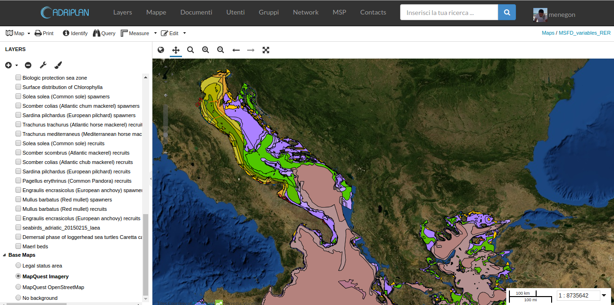

<style>
- .blue {
     color: #1b91ff;
 }
 .red {
     color: #ff2c2d;
 }
 .green {
     color: #17ff2e;
 }

</style>

<section>
    <h3>Development and integration of geopython tools to support Integrated Coastal Management and Maritime Spatial Planning</h3>
    <p><a src="">Stefano Menegon</a> & <a src="">Alessandro Sarretta</a></p>
    <p><small>stefano.menegon at ismar.cnr.it</small></p>
    <p>&nbsp; </p>
    <h4>CNR - Institute of Marine Sciences</h4>
    <br>
    <p>Muttenz, June 24, 2016</p>
</section>

<!-- *********************************************************************** -->
<section>
    <h3>Context</h3>
    
    <ul>
        <li>Maritime Spatial Planning Directive - MSPD (2014/89/EU)</li>
        <li>Planning of coastal and marine areas</li>
        <li>Tools to support Ecosystem Based Management: conflict between uses, cumulative impacts on environment</li>
    </ul>
</section>

<section>
    <h3>Conflict score</h3>
    <p>Tool to quantify the overlapping of uses, calculating the
        direct spatial conflict score based on COEXIST methodology
    </p>
    
    <a href="http://www.coexistproject.eu/">http://www.coexistproject.eu/</a>
</section>

<section data-background-image="img/coexists_schema.png" data-background-size="contain">
    <aside class="notes">
    </aside>
</section>

<section>
    <h3>Cumulative impact - Concepts</h3>
    <p>
        Identify areas in the marine space where the environmental
        components are more exposed to anthropogenic pressures
    </p>

    <ul>
        <li>Activities and uses (e.g. Maritime transport) </li>
        <li>Environmental components (e.g. Marine mammals)</li>
        <li>Pressures (e.g. Underwater noise)</li>
        <li>Sensitivities: the sensitivity of each environmental component to each pressure generated by a maritime use</li>
    </ul>
    <p><small>firstly introduced by Halpern et al. (2008) at global
        scale, then implemented in several Marine Regions
        (Mediterranean by Micheli et al. (2013), Baltic Sea by
        (Korpinen et al., 2013), and North Sea (Andersen et al., 2013)).
        </small></p>
</section>

<section data-background-image="img/cumulative_impact_schema.png" data-background-size="contain">
    <aside class="notes">
    </aside>
</section>

<section>
    <h3>Cumulative impact</h3>

    <p>
        <small>
            $ CI = \sum_{i=1}^l\sum_{j=1}^m\sum_{k=1}^n s(U_i, P_j, E_k) i(U_i, M(U_i, P_j, E_k)) d(E_k)$
            </small>
    </p>

    <p><small>modified from Andersen 2013, Human uses, pressures and impacts in the eastern North Sea</small></p>
    <ul>
        <li>U = Activities and uses</li>
        <li>E = Environmental components</li>
        <li>P = Pressures</li>
        <li>s(U, P, E) = Sensitivities</li>
        <li>i(U, M) = intensity U in the cell
        in question according to spatial model M</li>
    </ul>
</section>

<section>
    <h3>ADRIPLAN project</h3>
    <div style="float: left; width: 40%;">
        
    </div>
    <div style="float: right; width: 60%;">
        <ul>
            <li>EU funded project to develop MSP in the Adriatic-Ionian Macroregion</li>
            <li>Transboundary (4 countries: Croatia, Italy, Slovenia, Greece), 8 Scientific Partners and 9 Institutional Partners, 17 observers</li>
            <!--li>An integrated infrastructure for publishing, sharing and processing scientifc data</li-->
        </ul>
    </div>
    <p><a href="http://www.adriplan.eu">www.adriplan.eu</a></p>
    <aside class="notes">
    </aside>
</section>

<section data-background-image="img/architecture.png" data-background-size="contain">
    <aside class="notes">
        Schema utilizzando per ADRIPLAN ma in realtà è un approccio abbastanza generale
    </aside>
</section>

<section>
    <h3>1 - Adriplan Data Portal</h3>
    
    
    <ul>
        <li>GeoNode fork: GeoDjango, OWSlib, PyCSW</li>
        <li>Geospatial data storage / archiving, discovering, sharing</li>
        <li>Interoperable services: collaborative SDI</li>
        <li>Interactive mapping</li>
        <li>
            <a href="http://data.adriplan.eu">http://data.adriplan.eu</a>
        </li>
    </ul>
</section>

<section>
    <h3>2 - MSPTools</h3>
    <ul>
        <li>GeoNode plugin</li>
        <li>Data storage/sharing and processing integration</li>
        <li>Case Study concept to configure a simulation / run</li>
        <li>The outputs from each run are automatically saved and
            published through the portal</li>
        <li>The raw data are also available</li>
        <li>The output includes: geographical layers, raw data,
            base statistics and graphs</li>
    </ul>
    <aside class="notes">
        Case Study concept. It allows users to configure a
        simulation through a graphical interface: to choose the area
        of analysis, the grid cell size (hexagonal grid), to define
        the geographical resources (layers) to be used to model the
        different phenomena which can be, depending on the context,
        uses and activities or environmental components.  Each user
        can create more "Case Studies" and compare the results.

        The outputs from each run on “Case Studies” are
        automatically saved as “geographical layers” and published
        through the portal. The layer created is initially
        accessible only for admin users but it is possible to modify
        the access rules to allow the access also for other
        registered or non-registered users.

        For each "Case Study" a summary page is available that lists
        general information (e.g.  cells number, total score). In
        the next semester this information will be integrated with
        graphs and statistics automatically generated starting from
        the results of analyses.
    </aside>
</section>

<section>
    <h3>RectifiedGrid</h3>
    <ul>
        <li>Geospatial grid-based analyses</li>
        <li>Based on: Numpy, SciPy, shapely, rasterio, fiona, geopandas, owslib, matplotlib-basemaps</li>
        <li>Extends Numpy MaskedArray class by adding geospatial
            functionalities (i.e. projection awareness, bounding boxes)</li>
        <li>Simply support of "map-algebra" through Numpy synxtax (ex. map_a + map_b)
        <li>Input / Output from geospatial formats through rasterio / fiona
        <li>Supports EEA reference grid</li>
    </ul>
</section>

<section>
    <h3>Future steps</h3>
    <ul>
        <li>Open source release</li>
        <li>WPS</li>
    </ul>
</section>


<section>
    <h3>Development and integration of geopython tools to support Integrated Coastal Management and Maritime Spatial Planning</h3>
    <span xmlns:cc="http://creativecommons.org/ns#"
          property="cc:attributionName">by S. Menegon</span>
    is licensed under a <a rel="license"
                           href="http://creativecommons.org/licenses/by/4.0/">Creative
        Commons Attribution 4.0 International
        License</a>.
    <br/>
    <a rel="license"
       href="http://creativecommons.org/licenses/by/4.0/">
        
    </a>
</section>
